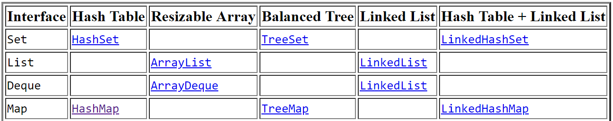

Java集合框架
前言
本系列主要写关于Java集合框架的一些细节：包括部分类的内部实现、算法探讨、性能分析、相关设计模式等等。Java8集合类中的部分类（比如常用的HashMap）内部实现机制已不同于以往，本系列之余也尽可能会纵向比较Java7版本与Java8框架之间的差异所在。
系列文章在追求尽可能的详而细致的描述，难免会有错误不当之处~
集合框架介绍
在Java8 Api文档中是这么描述集合框架的：
A collection is an object that represents a group of objects (such as the classic Vector class). A collections framework is a unified architecture for representing and manipulating collections, enabling collections to be manipulated independently of implementation details.
意在指明Java集合框架总体所需要做的事情：代表并操作各种集合类型。
集合框架有如下几点主要优点[^1]：
- 减少编程工作量[Reduces programming effort]：集合类中提供了大量的数据结构和算法的实现，你无需亲自去编写。
- 提高性能[Increases performance]：提供很多高性能的数据结构以及算法的实现。因许多接口的实现均是通用的[interchangeable]，因而可以根据需要实现相应的接口。
- 提供在无关API之间的互通[Provides interoperability between unrelated APIs]：建立一个通用语言来回传递集合类
- 降低学习API的工作量[Reduces the effort required to learn APIs]API：需要学习众多特定[adhoc]集合的API
- 加速软件重用[Fosters software reuse]：为操作它们提供了许多标准化的集合和算法
简介
Java集合框架包含如下内容： - 集合类接口[Collection interfaces]：代表了不同类型的集合类，诸如：
set、lists、maps。这些都是基础的框架接口 - 通用实现[General-purpose implementations]：主要集合类的接口实现
- 传统实现[Legacy implementations]：这些集合类来自于早期版本，例如：
Vector和Hashtable，在Java集合框架中均改进了实现 - 特殊用途实现[Special-purpose implementations]：设计实现用于特殊场景。这些实现类都展现了非标准的性能特征，使用限制，或者行为的差异
- 并发实现[Concurrent implementations]：用于实现在高并发场景下使用
- 包装器实现[Concurrent implementations]：提升功能性，例如同步性、以及一些其它实现
- 便利实现[Convenience implementations]：高性能“迷你实现”的集合类接口
- 抽象实现[Abstract implementations]：集合接口的局部实现以便于促进定制化的实现类
- 基础实现[Infrastructure]：为集合接口提供必要的接口
- 数组工具[Array Utilities]：工具方法主要作用于原生类型和引用对象。严格意义上说这并不是集合框架的一部分，Java平台其它相近的结构也有类似的实现
集合接口
集合接口分为两组类型，java.util.Collenction接口子类有如下基本类型接口： - java.util.Set
- java.util.SortedSet
- java.util.Queue
- java.util.concurrent.BlockingQueue
- java.util.concurrent.TransferQueue
- java.util.Deque
- java.util.concurent.BlockingDeque
另外一种集合接口类都基于java.util.Map接口，此接口并非真实集合类。然而这些接口包含集合可视操作方法，这些方法运行操作集合类型。Map接口有如下子类： - java.util.SortedMap
- java.util.NavigableMap
- java.util.concurrent.ConcurrentMap
- java.util.concurrent.ConcurrentNavigableMap
集合实现
集合接口实现类的典型命名方式是*<实现方式><接口名>*[Implementation-style~~InterFace]。下述表中汇总了这些通用实现类：
在这些集合接口中，通常情况下的实现支持所有可选择的方法并且它们包含的元素并不是严格限制的。这些接口是非同步的[unsynchronized]，但是类Collections包含很多称之为同步包装器[synchronization wrappers]的静态方法，这些方法可以将许多不同步的集合类同步化。所有的实现均拥有快速失败迭代器[fail-fast iterators]，其直接检测到非法的同步修改并且快速失败和清除（而不是超过预先的行为）并发集合类
当应用超过一个线程操作集合类时必须谨慎编程。简单的说就是并发编程。Java平台包含支持并发编程的扩展。集合类经常被使用，各种友好的并发接口和实现均包含在集合类的相应的API中。这些类型经常被使用在并发编程中超过了之前讨论的同步包装器。
这些并发接口组件包括： - BlockingQueue
- TransferQueue
- BlockingDeque
- ConcurrentMap
- ConcurrentNavigableMap
同步组件的实现类包含如下类。正确的使用方法参考API接口文档。 - LinkedBlockingQueue
- ArrayBlockingQueue
- PriorityBlockingQueue
- DelayQueue
- SynchronousQueue
- LinkedBlockingDeque
- LinkedTransferQueue
- CopyOnWriteArrayList
- CopyOnWriteArraySet
- ConcurrentSkipListSet
- ConcurrentHashMap
- ConcurrentSkipListMap
设计目标
参考
- [1]Java8 Api Documentation